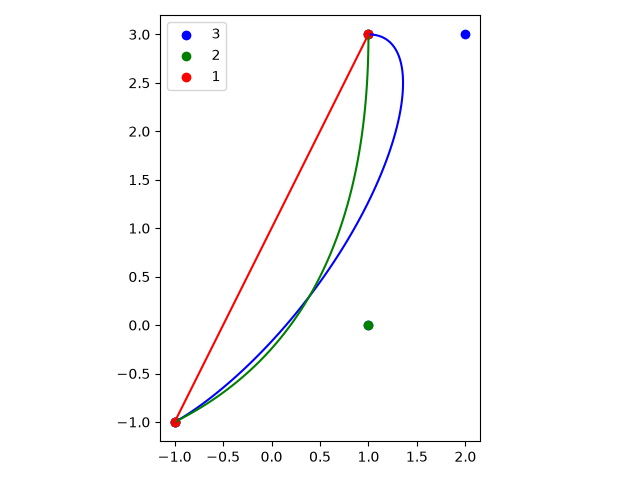
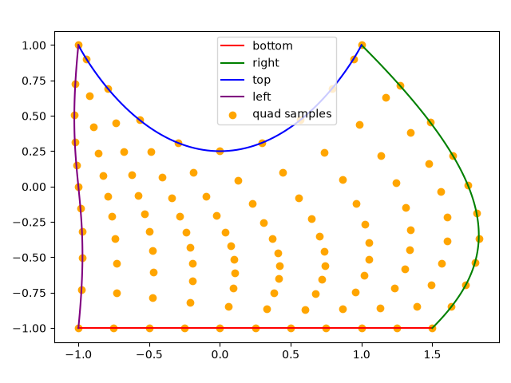
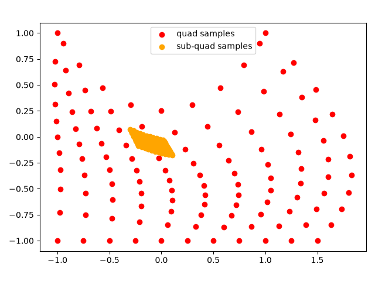
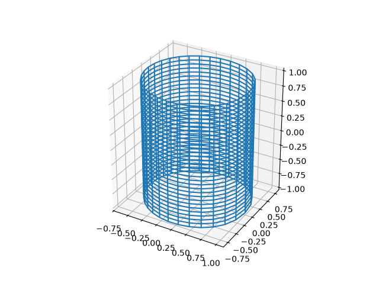
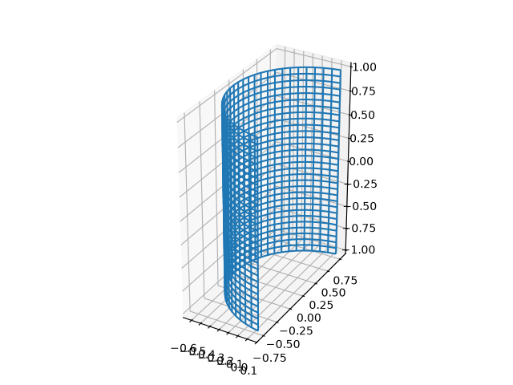
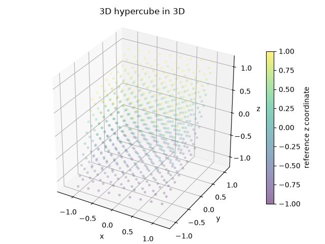
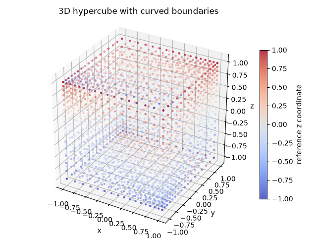
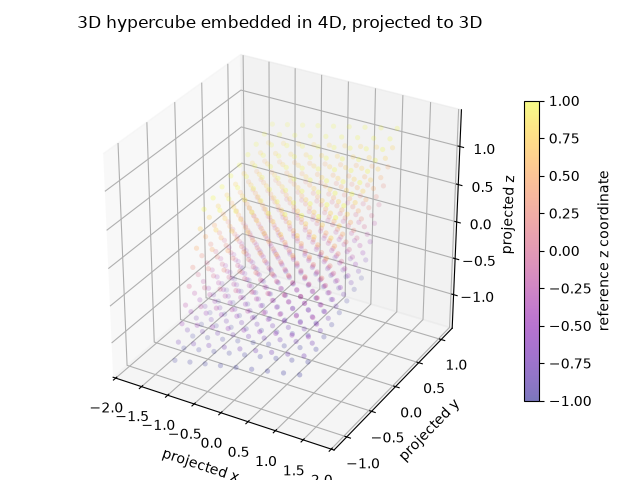
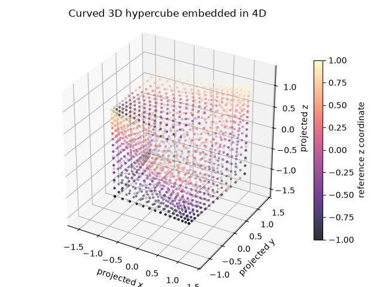
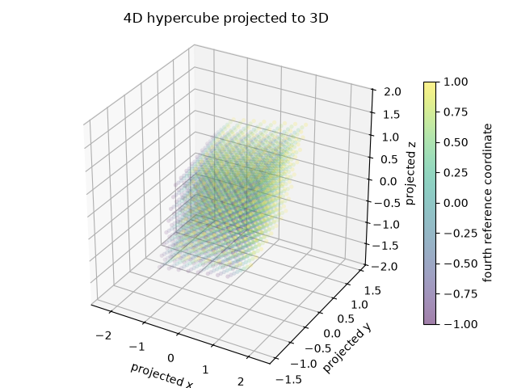

Note
Go to the end to download the full example code.
Domain Examples#
This example demonstrates how different domains look and behave like.
import numpy as np
from fdg import Hypercube, Line, Quad
from fdg.visualization import sample_domain
from matplotlib import pyplot as plt
def _corners_from_axes(origin: np.ndarray, axes: np.ndarray) -> list[np.ndarray]:
"""Build corners in the bit ordering used by :class:`Hypercube`."""
return [
origin
+ sum(
(axes[axis] for axis in range(len(axes)) if (corner_id >> axis) & 1),
start=np.zeros_like(origin),
)
for corner_id in range(1 << len(axes))
]
def _sample_projected(
domain: Hypercube,
samples: int,
projection: np.ndarray,
) -> tuple[np.ndarray, np.ndarray]:
"""Sample a domain with a sampled space map and project it into 3D."""
physical = sample_domain(domain, samples - 1)
reference = np.meshgrid(
*([np.linspace(-1, +1, samples)] * domain.ndim_reference), indexing="ij"
)
projected = np.einsum("...j,ij->...i", physical, projection)
return projected.reshape(-1, 3), reference[-1].reshape(-1)
def _sample_boundary_shell(
domain: Hypercube,
samples: int,
projection: np.ndarray,
) -> tuple[np.ndarray, np.ndarray]:
"""Sample and project every boundary face with sampled space maps."""
nodes = np.linspace(-1, +1, samples)
projected_faces: list[np.ndarray] = []
colors: list[np.ndarray] = []
for boundary_axis in range(domain.ndim_reference):
face_reference = np.meshgrid(
*([nodes] * (domain.ndim_reference - 1)), indexing="ij"
)
for end in (False, True):
physical = sample_domain(domain.boundary(boundary_axis, end), samples - 1)
projected_faces.append(
np.einsum("...j,ij->...i", physical, projection).reshape(-1, 3)
)
colors.append(face_reference[-1].reshape(-1))
return np.concatenate(projected_faces), np.concatenate(colors)
def _boundary_points_3d(mapping, samples: int) -> list[tuple[np.ndarray, np.ndarray]]:
"""Sample all six compatible faces of a three-dimensional domain."""
nodes = np.linspace(-1, +1, samples)
boundary_pairs: list[tuple[np.ndarray, np.ndarray]] = []
for boundary_axis in range(3):
pair: list[np.ndarray] = []
for side in (-1.0, +1.0):
grid = np.meshgrid(
*(nodes for axis in range(3) if axis != boundary_axis),
indexing="ij",
)
reference: list[np.ndarray] = []
local_axis = 0
for axis in range(3):
if axis == boundary_axis:
reference.append(np.full_like(grid[0], side))
else:
reference.append(grid[local_axis])
local_axis += 1
pair.append(np.stack(mapping(*reference), axis=-1))
boundary_pairs.append((pair[0], pair[1]))
return boundary_pairs
Lines#
Lines are a helper class, which map a 1D reference domain \([-1, +1]\) to an
N-dimensional curve. Line is represented with Bernstein polynomials, so by
inserting more values between the start and end point of the line, additional knots can
be added.
The example bellow shows three lines, which all start and end at the same points, but with a different number of extra knots inserted.
ln1 = Line((-1, -1), (+1, +3))
ln2 = Line((-1, -1), (1, 0), (+1, +3))
ln3 = Line((-1, -1), (-1, -1), (1, 0), (+2, +3), (+1, +3))
fig, ax = plt.subplots()
xplt = np.linspace(-1, +1, 101)
ax.scatter(ln3.knots[:, 0], ln3.knots[:, 1], label="3", color="blue")
ax.scatter(ln2.knots[:, 0], ln2.knots[:, 1], label="2", color="green")
ax.scatter(ln1.knots[:, 0], ln1.knots[:, 1], label="1", color="red")
ax.plot(*ln3.sample(xplt), color="blue")
ax.plot(*ln2.sample(xplt), color="green")
ax.plot(*ln1.sample(xplt), color="red")
ax.legend()
ax.set(aspect="equal")
fig.tight_layout()
plt.show()

Surfaces#
A Quad can be constructed from different lines. A quad can be bounded by lines
of any order, however, each line must begin where the previous one ended and must
together form a closed loop.
The coordinates of the Quad are interpolated between the curves by blending
them. As such, each bounding Line can have a different order.
bottom = Line((-1, -1), (+1.5, -1))
right = Line((+1.5, -1), (+2, -0.5), (2, 0.0), (+1, +1))
top = Line((+1, +1), (+1, +1), (0, -1), (-1, +1), (-1, +1))
left = Line((-1, +1), (-1.1, 0), (-0.9, 0), (-1, -1))
quad = Quad(bottom, right, top, left)
fig, ax = plt.subplots()
xp, yp = np.meshgrid(np.linspace(-1, +1, 11), np.linspace(-1, +1, 11))
ax.plot(*bottom.sample(xplt), color="red", label="bottom")
ax.plot(*right.sample(xplt), color="green", label="right")
ax.plot(*top.sample(xplt), color="blue", label="top")
ax.plot(*left.sample(xplt), color="purple", label="left")
ax.scatter(*quad.sample(xp, yp), color="orange", label="quad samples")
ax.set(aspect="equal")
ax.legend()
fig.tight_layout()
plt.show()
#
# Sub-regions
# -----------
#
# Domains can be sub-divided into sub-regions. This is done by specifying the
# region of the reference domain to extract. For each dimension, the reference
# domain reaches from -1 to +1, so the slice bellow is :math:`\frac{1}{10}` of
# the width and height of the reference domain.
sub_quad = quad.subregion((-0.3, -0.1), (0.5, 0.7))
fig, ax = plt.subplots()
ax.scatter(*quad.sample(xp, yp), color="red", label="quad samples")
ax.scatter(*sub_quad.sample(xp, yp), color="orange", label="sub-quad samples")
ax.set(aspect="equal")
ax.legend()
fig.tight_layout()
plt.show()


Surfaces#
A Line or Quad may be define in an any dimensional setting, as
long as the space is at least 1D or 2D respectively. As such, it is entirely possible
to define a Quad as 2D surface in 3D space.
btm_part = Line(
(+1, +0, -1),
(+1, +1, -1),
(+0, +1, -1),
(-1, +1, -1),
(-1, +0, -1),
(-1, -1, -1),
(-0, -1, -1),
(+1, -1, -1),
(+1, +0, -1),
)
top_part = Line(
(+1, +0, +1),
(+1, -1, +1),
(-0, -1, +1),
(-1, -1, +1),
(-1, +0, +1),
(-1, +1, +1),
(+0, +1, +1),
(+1, +1, +1),
(+1, +0, +1),
)
stitch = Line(
(+1, +0, +1),
(+1, +0, -1),
)
surf = Quad(top_part, stitch, btm_part, stitch.reverse())
fig = plt.figure()
ax = plt.subplot(projection="3d")
xp, yp = np.meshgrid(np.linspace(-1, +1, 31), np.linspace(-1, +1, 31))
ax.plot_wireframe(*surf.sample(xp, yp))
ax.set(aspect="equal")
plt.show()

It is of course possible to take a subdomain of this surface.
# This takes the half along the first dimension.
sub_surf = surf.subregion((-0.5, +0.5), (-1, +1))
fig = plt.figure()
ax = plt.subplot(projection="3d")
ax.plot_wireframe(*sub_surf.sample(xp, yp))
ax.set(aspect="equal")
plt.show()

Volumes#
Hypercube also represents volume mappings. The corner coordinates below
describe a mildly sheared three-dimensional element in three-dimensional space.
axes_3d = np.array(
(
(2.0, 0.15, 0.10),
(-0.25, 1.7, 0.25),
(0.20, 0.30, 1.8),
)
)
origin_3d = -0.5 * axes_3d.sum(axis=0)
cube_3d = Hypercube.from_corners(*_corners_from_axes(origin_3d, axes_3d))
points_3d, colors_3d = _sample_projected(cube_3d, 9, np.eye(3))
fig = plt.figure()
ax = fig.add_subplot(projection="3d")
scatter = ax.scatter(
points_3d[:, 0],
points_3d[:, 1],
points_3d[:, 2],
c=colors_3d,
cmap="viridis",
s=14,
alpha=0.55,
linewidths=0,
)
ax.set(
title="3D hypercube in 3D",
xlabel="x",
ylabel="y",
zlabel="z",
box_aspect=(1, 1, 1),
)
fig.colorbar(scatter, ax=ax, shrink=0.7, label="reference z coordinate")
fig.tight_layout()
plt.show()

Curved volumes#
Boundary point arrays can describe curved faces. The points below come from one smooth mapping, so all six faces contain identical values along their shared edges.
def curved_map_3d(a, b, c):
"""Map the reference cube to a volume with curved faces."""
return (
a + 0.22 * (1 - a**2) * np.sin(np.pi * b / 2) * np.sin(np.pi * c / 2),
b + 0.17 * (1 - b**2) * np.sin(np.pi * a / 2) * np.sin(np.pi * c / 2),
c + 0.20 * (1 - c**2) * np.sin(np.pi * a / 2) * np.sin(np.pi * b / 2),
)
curved_cube = Hypercube.from_boundary_points(
*_boundary_points_3d(curved_map_3d, samples=11)
)
curved_points, curved_colors = _sample_projected(curved_cube, 11, np.eye(3))
fig = plt.figure()
ax = fig.add_subplot(projection="3d")
scatter = ax.scatter(
curved_points[:, 0],
curved_points[:, 1],
curved_points[:, 2],
c=curved_colors,
cmap="coolwarm",
s=12,
alpha=0.55,
linewidths=0,
)
shell_points, shell_colors = _sample_boundary_shell(curved_cube, 17, np.eye(3))
shell_scatter = ax.scatter(
shell_points[:, 0],
shell_points[:, 1],
shell_points[:, 2],
c=shell_colors,
cmap="coolwarm",
s=9,
alpha=0.85,
linewidths=0,
)
ax.set(
title="3D hypercube with curved boundaries",
xlabel="x",
ylabel="y",
zlabel="z",
box_aspect=(1, 1, 1),
)
fig.colorbar(shell_scatter, ax=ax, shrink=0.7, label="reference z coordinate")
fig.tight_layout()
plt.show()

Embedded volumes#
A three-dimensional reference domain can live in four-dimensional physical space. Matplotlib cannot display the fourth coordinate directly, so this uses a fixed linear projection for the visualization. The fourth reference axis is still present in the physical coordinates and affects the projected shape.
axes_3d_in_4d = np.array(
(
(2.0, 0.15, 0.10, 0.80),
(-0.25, 1.7, 0.25, -0.70),
(0.20, 0.30, 1.8, 0.55),
)
)
origin_3d_in_4d = -0.5 * axes_3d_in_4d.sum(axis=0)
embedded_cube = Hypercube.from_corners(
*_corners_from_axes(origin_3d_in_4d, axes_3d_in_4d)
)
projection_4d = np.array(
(
(1.0, 0.0, 0.0, 0.55),
(0.0, 1.0, 0.0, -0.35),
(0.0, 0.0, 1.0, 0.45),
)
)
points_embedded, colors_embedded = _sample_projected(embedded_cube, 9, projection_4d)
fig = plt.figure()
ax = fig.add_subplot(projection="3d")
scatter = ax.scatter(
points_embedded[:, 0],
points_embedded[:, 1],
points_embedded[:, 2],
c=colors_embedded,
cmap="plasma",
s=14,
alpha=0.55,
linewidths=0,
)
ax.set(
title="3D hypercube embedded in 4D, projected to 3D",
xlabel="projected x",
ylabel="projected y",
zlabel="projected z",
box_aspect=(1, 1, 1),
)
fig.colorbar(scatter, ax=ax, shrink=0.7, label="reference z coordinate")
fig.tight_layout()
plt.show()

Curved embedded volumes#
The same boundary-point construction also works when the physical space has one more dimension than the reference volume.
def curved_map_4d(a, b, c):
"""Map a curved three-dimensional volume into four-dimensional space."""
x, y, z = curved_map_3d(a, b, c)
fourth_coordinate = (
0.40 * a * b
+ 0.30 * b * c
- 0.25 * a * c
+ 0.12 * np.sin(np.pi * a / 2) * np.sin(np.pi * b / 2)
)
return x, y, z, fourth_coordinate
curved_embedded_cube = Hypercube.from_boundary_points(
*_boundary_points_3d(curved_map_4d, samples=9)
)
curved_embedded_points, curved_embedded_colors = _sample_projected(
curved_embedded_cube, 9, projection_4d
)
fig = plt.figure()
ax = fig.add_subplot(projection="3d")
scatter = ax.scatter(
curved_embedded_points[:, 0],
curved_embedded_points[:, 1],
curved_embedded_points[:, 2],
c=curved_embedded_colors,
cmap="magma",
s=12,
alpha=0.5,
linewidths=0,
)
shell_points, shell_colors = _sample_boundary_shell(
curved_embedded_cube, 15, projection_4d
)
shell_scatter = ax.scatter(
shell_points[:, 0],
shell_points[:, 1],
shell_points[:, 2],
c=shell_colors,
cmap="magma",
s=9,
alpha=0.8,
linewidths=0,
)
ax.set(
title="Curved 3D hypercube embedded in 4D",
xlabel="projected x",
ylabel="projected y",
zlabel="projected z",
box_aspect=(1, 1, 1),
)
fig.colorbar(shell_scatter, ax=ax, shrink=0.7, label="reference z coordinate")
fig.tight_layout()
plt.show()

Four-dimensional eyecandy#
Finally, a four-dimensional reference domain is sampled in four-dimensional physical space and projected to three dimensions. Coloring by the fourth reference coordinate makes the extra direction visible in the point cloud.
axes_4d = np.array(
(
(1.8, 0.10, 0.10, 0.65),
(-0.25, 1.6, 0.20, -0.55),
(0.15, 0.30, 1.7, 0.45),
(0.60, -0.35, 0.50, 1.5),
)
)
origin_4d = -0.5 * axes_4d.sum(axis=0)
domain_4d = Hypercube.from_corners(*_corners_from_axes(origin_4d, axes_4d))
points_4d, colors_4d = _sample_projected(domain_4d, 8, projection_4d)
fig = plt.figure()
ax = fig.add_subplot(projection="3d")
scatter = ax.scatter(
points_4d[:, 0],
points_4d[:, 1],
points_4d[:, 2],
c=colors_4d,
cmap="viridis",
s=14,
alpha=0.5,
linewidths=0,
)
ax.set(
title="4D hypercube projected to 3D",
xlabel="projected x",
ylabel="projected y",
zlabel="projected z",
box_aspect=(1, 1, 1),
)
fig.colorbar(scatter, ax=ax, shrink=0.7, label="fourth reference coordinate")
fig.tight_layout()
plt.show()

Total running time of the script: (0 minutes 4.245 seconds)